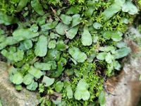

Targioniaceae
No widely accepted common name
The Targioniaceae is a small family of complex thalloid liverworts within the order Marchantiales. It is characterized by its distinctive bivalved involucres that protect the developing sporophyte, typically found in seasonally dry, rocky environments.
Overview
The Targioniaceae family belongs to the complex thalloid liverworts, a group known for internal tissue differentiation, including air chambers and pores. This family is relatively small, containing only a few genera, with Targionia being the most well-known. Members are typically found in Mediterranean climates or other regions with pronounced dry seasons, often growing on soil or rocks in exposed or partially shaded habitats.
Targioniaceae are adapted to survive desiccation. Their thalli often curl inwards when dry, protecting the photosynthetic tissues. The most striking feature is the dark, often purplish, bivalved involucre located ventrally near the thallus apex, which encloses the archegonia and later the developing sporophyte capsule.
Ecologically, they are pioneers or colonizers of disturbed soil and rock surfaces. Their study provides insights into the adaptations of early land plants to terrestrial environments, particularly concerning water retention and reproduction under stress.
Quick Facts
- Scientific Name: Targioniaceae Dumort.
- Common Name: (None widely used)
- Number of Genera: Approximately 2-3 (e.g., Targionia, Cyathodium - placement varies)
- Number of Species: Around 5-10
- Distribution: Widespread, particularly in temperate and subtropical regions with seasonal drought (Mediterranean climates, etc.)
- Evolutionary Group: Bryophytes - Liverworts (Marchantiophyta) - Marchantiopsida - Marchantiales
Key Characteristics
Gametophyte (Thallus) Structure
The dominant phase is the gametophyte, which is a flattened, dichotomously branching thallus. It is typically dark green to somewhat glaucous, often with purplish pigmentation on the ventral side and margins, especially when stressed. The thallus shows internal differentiation characteristic of complex thalloid liverworts:
- Epidermis: Upper epidermis contains simple air pores leading to internal air chambers.
- Air Chambers: Well-defined chambers containing short photosynthetic filaments.
- Storage Tissue: Ventral tissue composed of parenchyma cells, often containing oil bodies.
- Rhizoids: Both smooth and pegged rhizoids arise from the ventral surface, anchoring the thallus.
- Ventral Scales: Rows of purplish, often overlapping scales are present on the ventral side, protecting the growing apex and potentially aiding water retention.
Reproductive Structures
Targioniaceae are typically monoicous (both male and female structures on the same plant), though sometimes dioicous.
- Antheridia: Male reproductive organs are typically located in discrete receptacles (androecia) on short ventral or dorsal branches, or sometimes scattered along the thallus midline.
- Archegonia: Female reproductive organs are borne in an archegoniophore that is highly reduced and enclosed within a prominent, dark, bivalved involucre located ventrally just behind the thallus apex. This involucre is a key diagnostic feature.
Sporophyte
The sporophyte develops within the protective involucre after fertilization. It is relatively simple, consisting of:
- Foot: Embedded in the gametophyte tissue, absorbing nutrients.
- Seta: Very short or practically absent.
- Capsule: Globose to ovoid, dark brown to black when mature. The capsule wall is typically single-layered and dehisces irregularly or by fragmentation to release spores and elaters.
Spores and Elaters
The capsule contains spores and elaters.
- Spores: Typically small, tetrahedral or globose, with varied ornamentation patterns useful for species identification.
- Elaters: Sterile, elongated cells with spiral thickenings that aid in spore dispersal through hygroscopic movements (twisting and untwisting with changes in humidity).
Chemical Characteristics
Like many liverworts, Targioniaceae possess oil bodies within their cells, containing various terpenoids and phenolic compounds. The specific chemical profiles can be taxonomically informative and may contribute to drought tolerance or defense against herbivores.
Field Identification
Identifying Targioniaceae in the field relies on recognizing their thalloid structure combined with the distinctive reproductive features, especially the involucre.
Primary Identification Features
- Thallus Form: Flattened, dichotomously branched, complex thalloid structure.
- Bivalved Involucre: The most diagnostic feature is the dark (often purplish-black), mussel-shell-shaped involucre located ventrally near the thallus apex, enclosing the archegonia/sporophyte.
- Air Pores: Simple pores visible on the dorsal surface (may require a hand lens).
- Ventral Scales: Prominent, often purplish scales on the underside.
- Habitat: Typically found on soil or rocks in seasonally dry, often sunny locations.
Secondary Identification Features
- Coloration: Often dark green with purple margins and ventral surface.
- Texture: Somewhat leathery when moist, curling inwards when dry.
- Antheridial Receptacles: Look for small cushions or patches (androecia) on dorsal or ventral surfaces/branches.
- Rhizoids: Presence of both smooth and pegged rhizoids (microscopic feature).
Seasonal Identification Tips
- Wet Season (Growth Period): Thalli are green, expanded, and actively growing. Reproductive structures (involucres, antheridial patches) are most likely to be visible.
- Dry Season (Dormancy): Thalli become curled, dry, and often darker or more purplish. They may appear dormant or dead but can rehydrate. The persistent involucres are still visible. Sporophytes may mature and release spores during transition periods.
Common Confusion Points
Targioniaceae might be confused with other complex thalloid liverworts, especially when sterile:
- Reboulia / Asterella (Aytoniaceae): These also grow in similar habitats but have distinct archegoniophores (raised, stalked structures bearing archegonia/sporophytes) rather than the ventral bivalved involucre of Targionia. Their pores are often more complex.
- Mannia (Aytoniaceae): Similar habitats, but archegoniophores are present, though sometimes short.
- Riccia species (Ricciaceae): Some terrestrial Riccia form rosettes or thalli, but they lack the internal air chambers of Targioniaceae and have sporophytes embedded within the thallus, not in a distinct involucre.
Key differentiator: Look for the prominent, dark, bivalved ventral involucre near the apex – this is unique to Targioniaceae among common complex thalloids.
Field Guide Quick Reference
Look For:
- Flattened, branching thallus
- Dark, bivalved ventral involucre near apex
- Purplish ventral scales and margins
- Simple air pores (hand lens)
- Growth on soil/rock in dry habitats
Key Distinctions:
- No raised/stalked archegoniophore (unlike Aytoniaceae)
- Presence of internal air chambers (unlike Riccia)
- Involucre is ventral and bivalved
Notable Examples
The family is small, with Targionia being the principal genus.

Targionia hypophylla
(No common name)
The most widespread and commonly encountered species in the family. Found globally in suitable habitats (Mediterranean climates, semi-arid regions). Characterized by its classic dark green thallus with purple underside and margins, and the prominent blackish bivalved involucre just behind the apical notch. Often forms dense patches on exposed soil banks or rock crevices.

Targionia lorbeeriana
(No common name)
Similar to T. hypophylla but often distinguished by subtle differences in thallus morphology, spore ornamentation, or chromosome number. Its distribution may overlap with T. hypophylla, and identification often requires microscopic examination. Found in similar seasonally dry habitats.
Phylogeny and Classification
Targioniaceae is placed within the order Marchantiales, which encompasses all complex thalloid liverworts. Molecular phylogenetic studies confirm its position within this order, though its exact relationships to other families like Aytoniaceae and Cleveaceae are still areas of active research.
The family represents an ancient lineage of liverworts, showcasing adaptations for survival in environments with periodic drought. The evolution of the highly protective bivalved involucre is a key apomorphy (derived characteristic) of the family.
Position in Plant Phylogeny
- Kingdom: Plantae
- Division: Marchantiophyta (Liverworts)
- Class: Marchantiopsida
- Order: Marchantiales
- Family: Targioniaceae
Evolutionary Significance
Targioniaceae exemplifies successful adaptation to terrestrial life, particularly in challenging, drought-prone environments. Key evolutionary aspects include:
- Complex Thallus: Internal differentiation allows for efficient photosynthesis and water/nutrient storage.
- Desiccation Tolerance: Physiological and morphological adaptations (e.g., thallus curling) enable survival during dry periods.
- Protective Involucre: The bivalved involucre provides significant protection for the developing embryo and sporophyte against desiccation and physical damage.
- Reduced Sporophyte Dependence: While dependent, the sporophyte is simple, and resources are heavily invested in the resilient gametophyte generation and spore production.